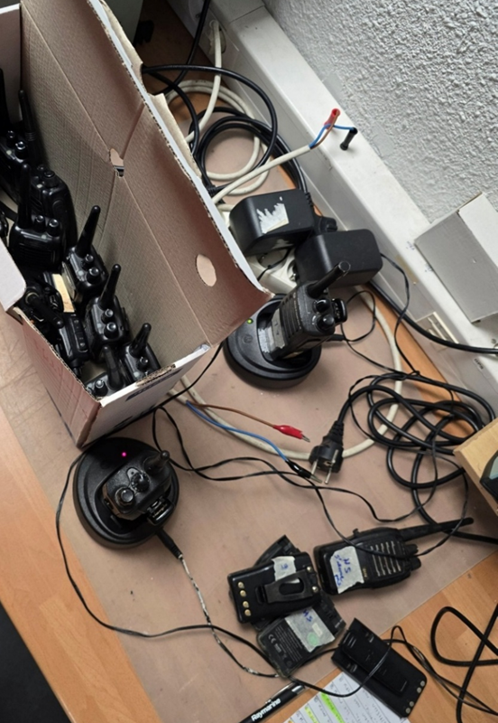
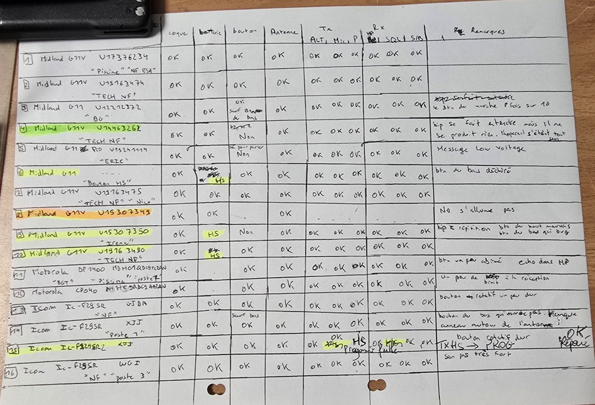
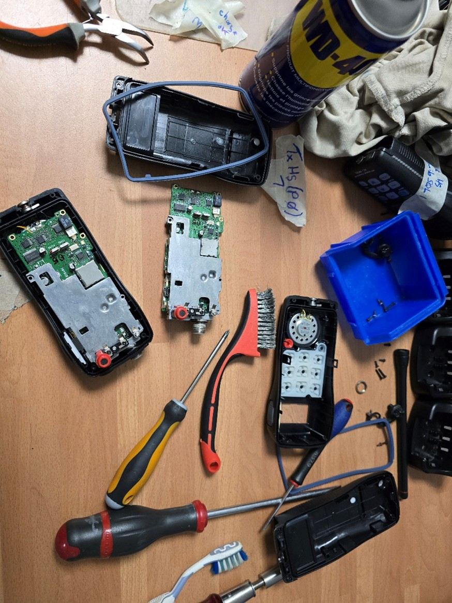
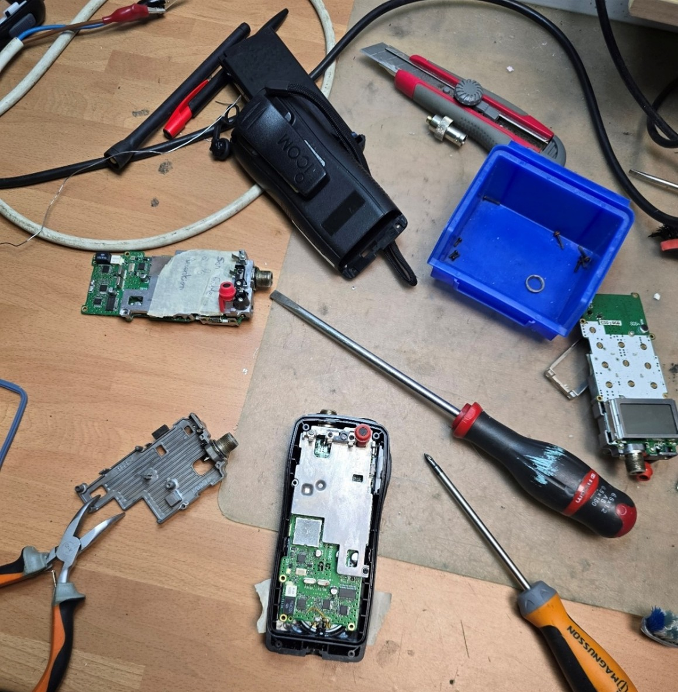
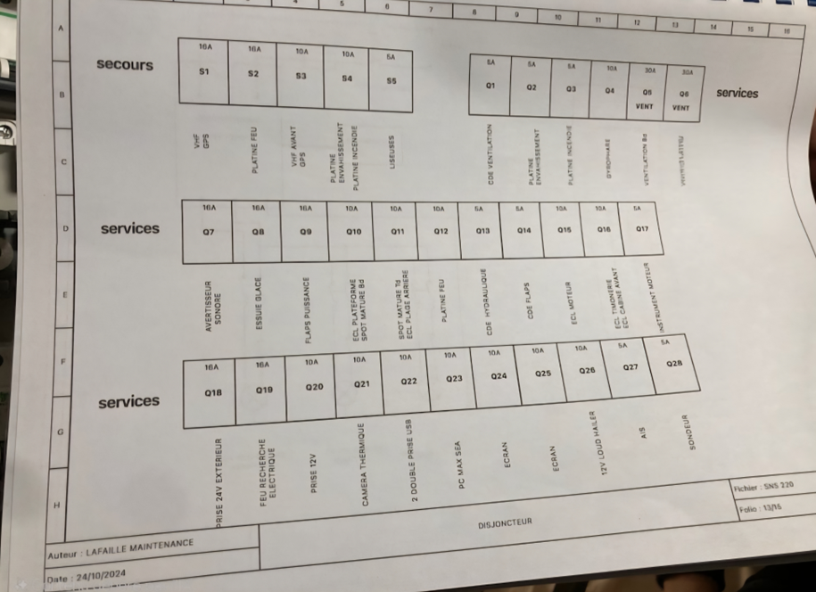

STAGE BUT2 · Février–Avril 2025 · 8 semaines
Sud Communication (Mauguio)
Radiocommunication et électronique marine (vente, SAV, conseil). Trois missions principales lors de ce stage.
1) SAV en atelier : diagnostic et tests d'équipements de radiocommunication
Mise en place d'une procédure de test structurée pour les talkies-walkies et VHF marines : contrôle visuel, test des batteries, des commandes, de l'antenne, et mesure RF au Surecom SW-102. L'objectif était l'identification de dysfonctionnements, avec traçabilité et rédaction de fiches de diagnostic.


2) Mission technique : reconstitution d'un talkie-walkie Icom IC-M35
Reconstitution d'un équipement fonctionnel à partir de pièces détachées. Cela a nécessité la sélection des bonnes pièces, le démontage méticuleux, la soudure de composants CMS, l'exécution de tests progressifs et la validation finale (alimentation Li-ion 7,4V, vérification des commandes, mesure de puissance RF à ~6W et test audio).


3) Projet principal : installation embarquée (Vedette SNSM)
Participation à l'installation d'équipements électroniques (GPS, VHF, PC marin, convertisseurs) à bord d'une vedette SNSM dans le cadre d'une refonte mi-vie. Le projet imposait des contraintes fortes en matière d'étanchéité, de gestion de l'espace limité, de cheminement optimisé des câbles, de conception du tableau de répartition des disjoncteurs et d'étiquetage soigné.

